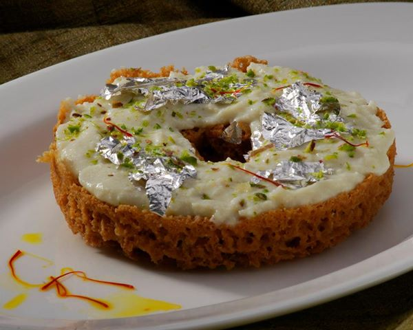

Ingredients For the Ghevar:
1 cup all-purpose flour (maida)
1/2 cup ghee (clarified butter)
1/2 cup chilled water
1/4 cup milk
1/4 teaspoon baking powder
1/4 teaspoon baking soda
A pinch of salt

1 cup sugar
1/2 cup water
1/4 teaspoon cardamom powder
1/2 teaspoon rose water (optional)
A few saffron strands (optional)
Combine Ingredients: In a pan, combine sugar and water. Bring to a boil, stirring until the sugar is fully dissolved.
Flavor the Syrup: Add cardamom powder and saffron strands if using. Reduce heat and let it simmer for about 5-7 minutes. The syrup should be slightly sticky but not thick. Set aside to keep warm.
Prepare the Ghevar Batter:
1 Mix Dry Ingredients: In a mixing bowl, sift the flour, baking powder, baking soda, and salt together.
2 Add Ghee: Melt ghee and let it cool slightly. Add the melted ghee to the flour mixture and mix well.
3 Prepare the Batter: Gradually add chilled water and milk to the flour mixture while whisking continuously to form a smooth batter. The batter should be of pouring consistency, like a thick pancake batter. Let it rest for about 15 minutes.
Fry the Ghevar:
1 Heat Oil: Heat ghee or oil in a deep pan or kadai over medium heat. It should be enough to submerge the ghevar. Test the temperature by dropping a small amount of batter into the oil; it should rise slowly to the surface.
2 Pour the Batter: Once the oil is hot, pour a ladleful of batter into the center of the hot oil. The batter will spread and form a honeycomb-like structure.
3 Fry the Ghevar: Fry the ghevar until it turns golden brown and crispy. Use a slotted spoon to flip it gently if needed. Be careful not to overcrowd the pan fry in batches if necessary.
Drain: Remove the ghevar from the oil and drain on paper towels.
Soak the Ghevar: While still warm, dip the fried ghevar into the warm sugar syrup. Let it soak for a few seconds, then remove and drain excess syrup.
Garnish and Serve:
Garnish: Place the soaked ghevar on a serving plate. Garnish with chopped nuts and silver leaf if desired.
Serve: Ghevar can be enjoyed warm or at room temperature. It’s a delightful treat with a crispy texture and sweet, aromatic flavor!
Enjoy making and eating this special sweet treat!